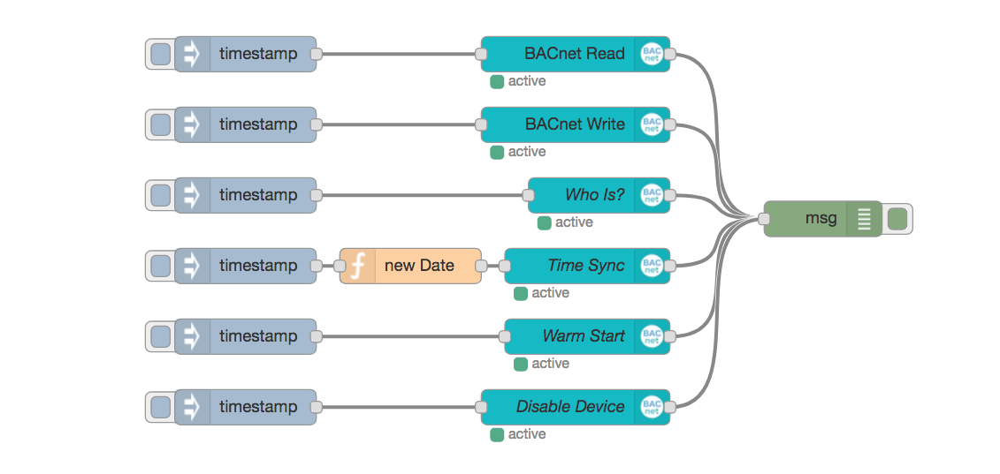

node-red-contrib-bacnet
Building Automation and Control Networks Protocol toolbox for Node-RED.
!!! NOT READY TO USE - UNDER DEVELOPMENT - START YOUR CONTRIBUTION !!!
Support for the project straight away!
- based on bacstack library v0.0.x
Install
Run command on Node-RED installation directory.
npm install node-red-contrib-bacnet or run command for global installation.
npm install -g node-red-contrib-bacnet try these options on npm install to build, if you have problems to install
--unsafe-perm --build-from-source
Contributing
Let's work together! Please read and in best case accept CONTRIBUTING by your sign and send it via E-Mail. You could also send just a pull request.
License
The MIT License
Important
This is not an official product of the BACnet Advocacy Group. It is just to provide BACnet to Node-RED based on node-bacstack package. BACnet® is a registered trademark of American Society of Heating, Refrigerating and Air-Conditioning Engineers (ASHRAE).
Contribution BACnet
I'd like to give special thanks to Fabio Huser for the BACnet node-bacstack package!